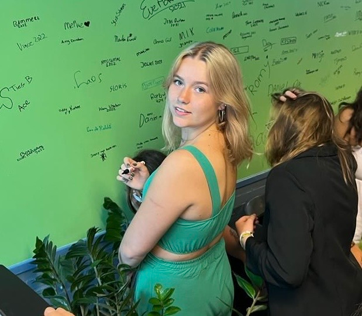

Welkom!
Op deze website leer je meer over de bijzondere organisatie: De Poezenboot! Ik vertel je graag meer over waarom deze organisatie zo speciaal is en waarom we allemaal een steentje zouden moeten bijdragen.
About me
Hi! Ik ben Tessa en ik ben eerstejaars student Communication and Multimedia Design. Ik ben zelf erg bewust van mijn omgeving en hoe ik deze zo schoon mogelijk kan houden. Ook ben ik nu al 5 jaar lang vegetarisch. Ik ben dus een grote dierenvriend. Daarom vind ik het belangrijk dat alle dieren een veilig plekje hebben om te wonen. De Poezenboot helpt hierbij en daarom kan je op deze website lezen waarom ze zo een mooie organisatie zijn!
